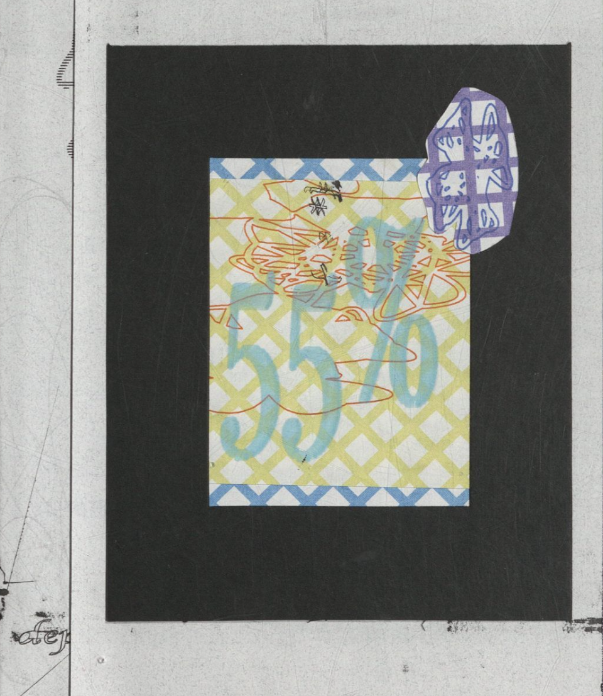
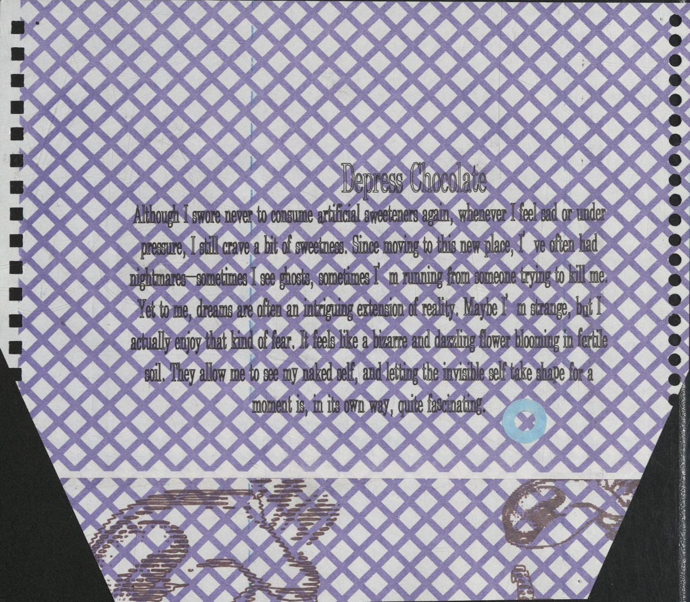
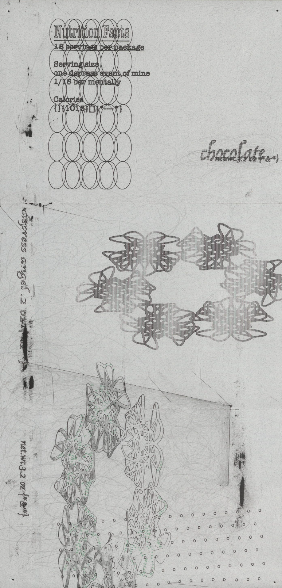
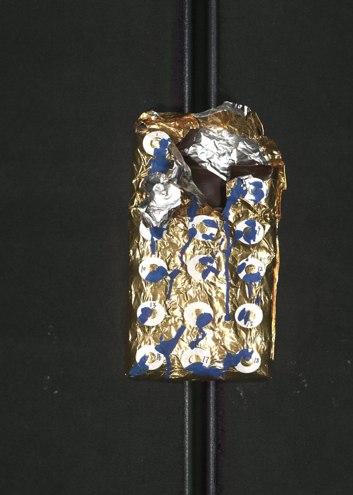
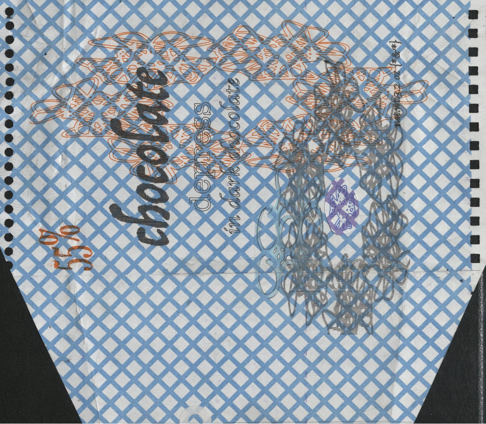
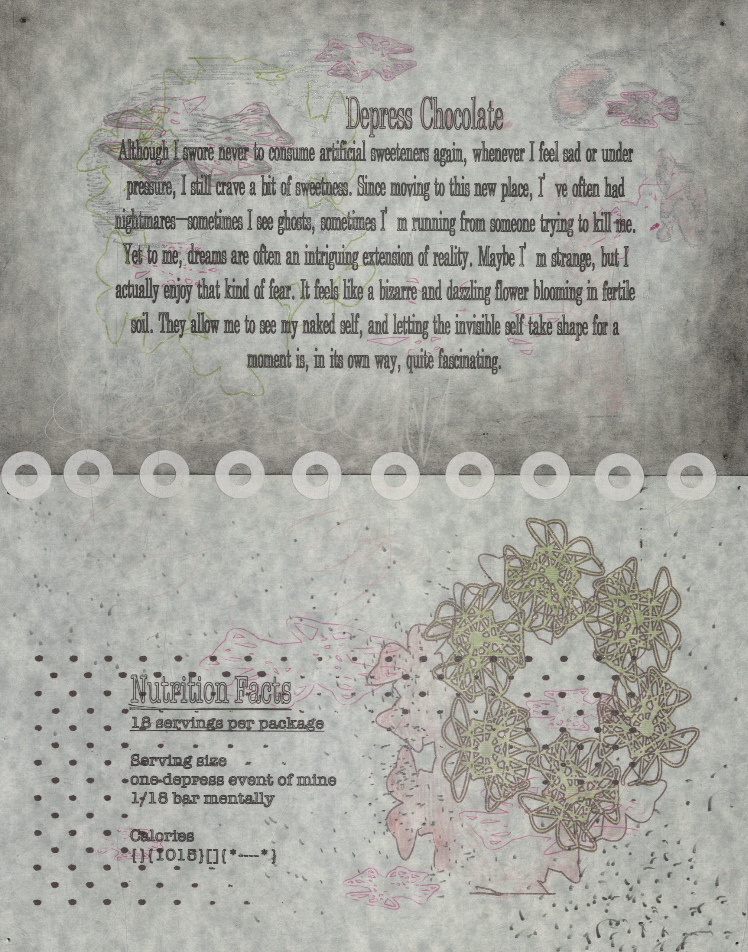
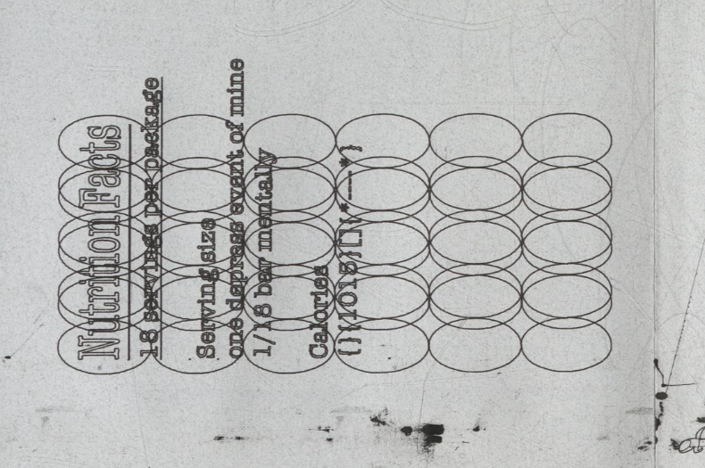

Although I swore never to consume artificial sweeteners again, whenever I feel sad or under pressure, I still crave a bit of sweetness. Since moving to this new place, I've often had nightmares—sometimes I see ghosts, sometimes I'm running from someone trying to kill me.
Yet to me, dreams are often an intriguing extension of reality. Maybe I'm strange, but I actually enjoy that kind of fear. It feels like a bizarre and dazzling flower blooming in fertile soil. They allow me to see my naked self, and letting the invisible self take shape for a moment is, in its own way, quite fascinating.
⸻
Nutrition Facts
• 18 servings per package
• Serving size: one-depress event of mine / 1/18 bar mentally
• Calories: {}[1015｝（*-*）